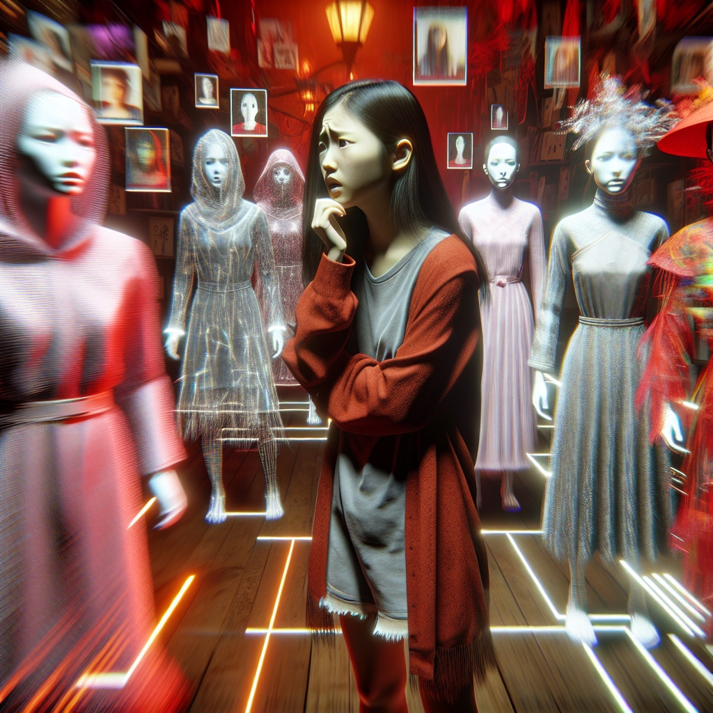

The Babydoll Archi Scandal: AI's Dark Role in Hijacking Lives for Viral Fame
Published on July 16, 2025 by Drawmatinc Team
In the fast-paced world of social media, where a single reel can catapult someone to stardom overnight, the line between reality and fabrication has never been blurrier. Enter the case of Archita Phukan, a woman from Dibrugarh, Assam, who unwittingly became the face of "Babydoll Archi"—a glamorous, bold influencer persona that amassed over 1.4 million followers on Instagram. What started as seemingly innocent saree transformation videos and lip-sync reels quickly spiraled into a web of explicit content, fabricated collaborations, and wild speculation. But beneath the viral glamour lay a sinister truth: this wasn't Archita's creation at all. It was a meticulously crafted revenge plot by her ex-boyfriend, powered by artificial intelligence (AI). This July 2025 incident not only exposed the vulnerabilities of digital identity but also highlighted how AI and social media can hijack a real person's life for exploitative gain.
Instagram's "Just Assam Things" pointed out inconsistencies: outfits and poses matching those of other models, but with Archita's face superimposed. Speculation grew that "Babydoll Archi" was entirely AI-generated, a digital phantom designed to deceive. The profile even changed its name to "Ishtara Amira" amid the buzz, further muddying the waters. What many didn't realize was that this wasn't just harmless fakery—it was rooted in a real woman's stolen likeness.
The Revenge Plot Unveiled
The shocking revelation came in mid-July 2025 when Assam Police arrested 20-year-old Pratim Bora (also reported as Pritam Bora) from Tinsukia. Bora, Archita's ex-boyfriend, confessed to orchestrating the entire scheme as an act of revenge following their breakup. Using a single genuine photo of Archita, he employed AI tools—likely accessible software like deepfake generators—to morph her face onto bodies from explicit videos and images sourced online. This included fabricating the Kendra Lust collaboration and creating content that portrayed her as involved in adult work. Bora didn't stop at defamation; he monetized the fake profile, reportedly earning substantial sums—estimates range from lakhs to crores—through promotions and possibly premium content platforms.
The operation went underground after Archita filed an FIR with Dibrugarh Police, who traced the digital trail back to him. His devices were seized for forensic analysis, and he now faces charges under the Indian Penal Code (IPC) for cyberstalking, defamation, and obscenity, as well as violations of the Information Technology (IT) Act. The fake accounts were suspended, but the damage was done. Archita endured harassment, public scrutiny, and a tarnished reputation.
Recent X posts echo the outrage, with users sharing images of the morphed content and calling out the dangers of AI misuse. One post from July 14, 2025, detailed how Bora's actions stemmed from a post-breakup grudge, emphasizing the ease of such digital sabotage.
Archita Phukan aka "Babydoll Archi" is not an AI model. Her ex, Pratim Bora, used AI to fake pics with Kendra Lust & spread false content. He earned ₹10L+ before arrest. Archita filed an FIR—police confirmed she's real, not in adult work. #ArchitaPhukan #babydollarchi #AImodel pic.twitter.com/483Ex14rkQ
— ArD Roxz (@ardroxz) July 15, 2025
The Dark Side of AI and Social Media: Hijacking Lives for Viral Exploitation
This incident starkly underscores the dark underbelly of AI and social media, where technology meant to innovate can instead weaponize personal vendettas. In an era where deepfake tools are democratized—available via apps and online platforms—anyone with a grudge and basic tech skills can hijack a real person's identity. Archita's case illustrates how a single photo can be twisted into a full-fledged false narrative, spreading virally and exploiting societal curiosities around glamour and scandal.
The consequences are profound: victims face not just emotional trauma but real-world repercussions like job loss, social ostracism, and safety threats. Social media amplifies this by prioritizing engagement over authenticity, allowing fabricated content to thrive unchecked. As AI evolves, such exploits could escalate, blurring reality further and eroding trust in digital interactions. Experts warn that without safeguards, we're entering an age where "anyone can be a victim," as deepfakes democratize revenge porn and defamation. In India, where laws around pornography and digital privacy are inconsistent, cases like this expose systemic gaps, fueling calls for stricter AI regulations.
Minimizing the Risks: Strategies for Protection
While the Babydoll Archi scandal is a wake-up call, it's not inevitable. Preventing such exploitations requires a multi-layered approach involving individuals, platforms, lawmakers, and technology.
Personal Precautions
- Limit Digital Footprint: Be cautious about sharing high-resolution photos or videos online, use privacy settings to restrict access, and avoid posting identifiable images on public profiles.
Often vulnerable to exploitation. As AI advances, so must our defenses—ensuring technology empowers rather than ensnares. Let's turn this scandal into a catalyst for a safer online world.
At Drawmatinc.art, we believe in using AI and digital tools responsibly to enhance creativity, not harm it. Check out our free Brush Stroke Patterns Drawing Tool to create authentic art safely